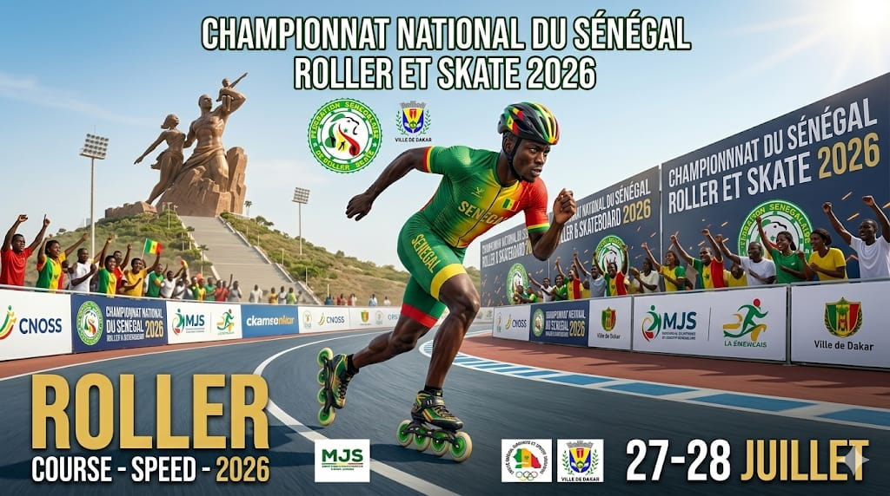

Le roller sénégalais continue sa montée en puissance. Les 27 et 28 juillet 2026, Dakar vibrera au rythme de la vitesse, de la performance et de l'adrénaline à l'occasion du Championnat National du Sénégal de Roller et Skate 2026 — Discipline Roller Course / Speed.
Organisé par la Fédération Sénégalaise de Roller et Skate (FSRS), cet événement national réunira les meilleurs athlètes venus des différentes régions du Sénégal pour deux journées de compétition intense, de dépassement de soi et de célébration du sport urbain.
Un cadre emblématique pour un spectacle sportif de haut niveau
Dans un cadre exceptionnel marqué par l'image emblématique du Monument de la Renaissance Africaine, ce championnat promet un spectacle sportif de haut niveau avec des courses de vitesse où technique, endurance et explosivité seront au rendez-vous.
Une étape majeure vers les grandes échéances internationales
Cette édition 2026 représente également une étape majeure dans les préparatifs des grandes échéances internationales, notamment les qualifications et compétitions mondiales à venir, ainsi que la dynamique sportive autour des Jeux Olympiques de la Jeunesse Dakar 2026.
Une mobilisation populaire attendue
Le public dakarois est attendu massivement pour soutenir les champions nationaux, découvrir les talents émergents du roller sénégalais et vivre une ambiance festive aux couleurs du Sénégal. Clubs, familles, passionnés de sport et partenaires institutionnels seront mobilisés autour de cet événement qui met en valeur la jeunesse, la discipline et l'excellence sportive.
Une vitrine du savoir-faire sénégalais
Le Championnat National de Roller Course 2026 sera aussi une vitrine du savoir-faire organisationnel du Sénégal dans le domaine des sports de glisse, avec l'implication des institutions sportives nationales, des collectivités territoriales et des partenaires engagés pour le développement du roller et du skate.
« Rendez-vous les 27 et 28 juillet 2026 à Dakar ! Le Sénégal roule vers l'excellence. Place à la vitesse, à la passion et au spectacle du roller course ! 🇸🇳🛼 »